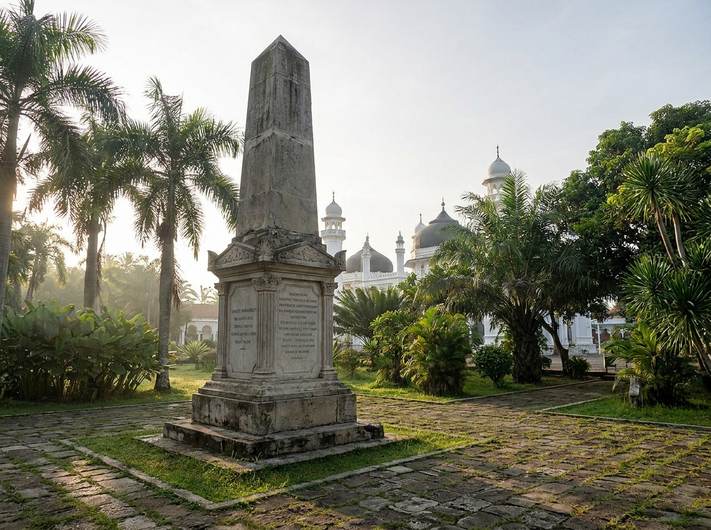
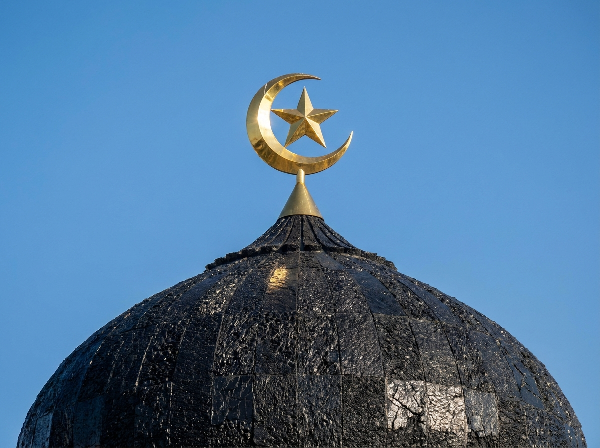

Detail Estetika
Jejak Sejarah dalam Setiap Detail

Monumen Perjuangan
Monumen Kohler
Sebuah tugu penanda di halaman masjid yang menjadi saksi bisu tempat robohnya Mayor Jenderal J.H.R. Kohler pada ekspedisi militer Belanda pertama di Aceh tahun 1873.

Ikonik
Kubah Hitam Gula Batu
Kubah kayu sirap berwarna hitam pekat dilapisi aspal yang khas, memberikan kontras luar biasa dengan dinding pualam putih bersih dari masjid ini.

Lansekap Menjulang
Menara Utama
Menara setinggi 85 meter di pekarangan utama, melambangkan kumandang gema tauhid, sekaligus menjadi titik pemandangan kota Banda Aceh yang ikonik.